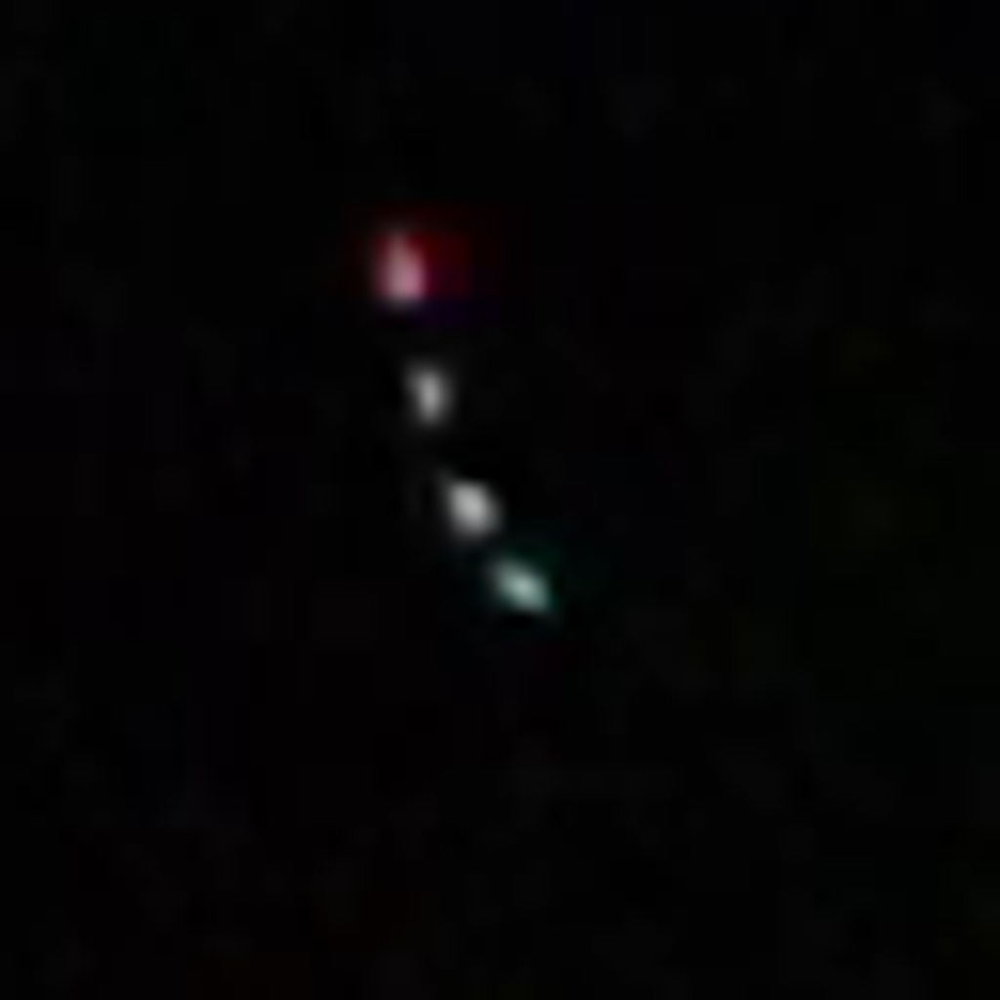

Human reviewOperators and collaborators
Every review stays connected
to its source observation.

Star People is an observation network for people with wonder.
All detection examples are real captures from our Field Station.
Join the network ↗See how it works ↓
We’re building a network of people operating dedicated sky-observation stations. Each station detects locally. Connected observers contribute detections as they happen, creating a shared view of activity across the sky.
People review the evidence. Confirmed anomalies enter the public archive; reviewed examples help train the models that return to the network.

Camera + RF sensors.
Local storage. Shared detections.
Every review stays connected
to its source observation.
Video, annotated frames, and correlated sensor data.
Internet Archive All reviewed labelsReviewed examples become evaluated, versioned models.
GitHubCamera frames are screened for motion and classified locally. Connected stations contribute detections and context. Original video stays local; offline captures queue for later sync.

Find a place clear of obstructions where you can aim your camera skyward.
Our open anomaly vision model powers classification of the things that move in the sky.


When there’s a human-confirmed anomalous event, the data is archived on the Internet Archive.
A complete sky-observation lab. Capture video and radio signals, review detections, and learn from the evidence.
Watch the sky with our Field Station.
Live camera observations, anomaly detections, and radio-frequency monitoring. Explore previous sessions on YouTube.
We use custom AI models trained on known anomalous footage released from governments around the world, credible non-government videos, and first-hand captures to make it easy for the community of Star People to detect, share, and create structured data from anomalous events in their local skies.
Explore the model| Approach | Score iA score out of 100 using a weighted harmonic mean: recall 35%, precision 25%, specificity (avoiding false positives) 25%, and accuracy 15%. Higher is better. | Recall | False positives |
|---|---|---|---|
| 01Human-curatedExperimental settings | 87.2 | 92.8% | 0.5% |
| 02Human-curatedStable settings | 84.6 | 95.2% | 0.7% |
| 03HybridHuman + machine labels | 64.4 | 81.9% | 1.7% |
| 04Machine-onlyMachine-generated labels | 23.1 | 43.9% | 5.6% |
105,604 reviewed examples
Training-set comparison, not a measure of performance on unseen footage.
We’re creating an open software ecosystem and publishing model for how researchers can better detect anomalies in the skies, collect a range of sensor data correlated with that event, and share data instantly, making the project richer, our models smarter, and the public more informed.
Browse the archive